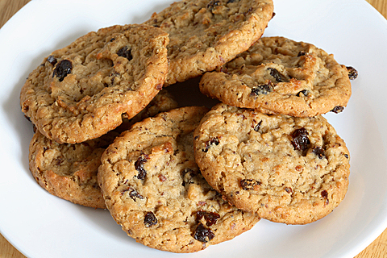

Oatmeal Raisin Cookies

Double Trouble Oatmeal Raisin Cookies
"Double Trouble?" Why? Because we've added both tasty raisins and scrumptious oatmeal. Plus,
you can't eat just one.
These big, chewy, delightful cookies are moist in the center and have a wonderfully crisp edge. You might ask,
"Oatmeal? Does that mean they are a healthy snack?" Well, maybe not healthy, but they sure are delicious!
Ingredients
- 1 c. all-purpose flour
- 1/2 tsp. ground cinnamon
- 1/2 tsp. baking soda
- 1/4 tsp. salt
- 1 1/2 c. old-fashioned rolled oats
- 1/2 c. butter, softened
- 1/4 c. granulated sugar
- 1/2 c. packed brown sugar (light or dark)
- 1 egg (room temperature)
- 1 tsp. vanilla extract
- 1 c. raisins
Steps
- Preheat oven to 350° F.
- In a large bowl, whisk the flour, cinnamon, baking soda, and salt together
until well combined. Stir in the rolled oats, then set aside.
- In a stand mixer (or separate large bowl), beat the butter, brown sugar, and
granulated sugar together for 1 - 2 minutes or until well combined.
Add the egg and vanilla and mix well, until fully combined. Remember to
stop periodically to scrape down the bowl.
- Add the flour mixture, a little at a time, on low speed until just combined.
Then stir in the raisins.
- Cover and refrigerate the dough for at least 30 minutes.
- Place parchment paper on a large baking sheet. Drop rounded spoons full of dough
(about 1.5 tablespoons each) onto the baking sheet, about 2 inches apart.
- Bake 10 - 12 minutes or until the edge of the cookies are light brown and the
tops are set. Let cool for 5 minutes then remove them from the cookie sheet
and place on a cooling rack. Cool completely, about 15 minutes.
Store in an airtight container for up to one week.
Home